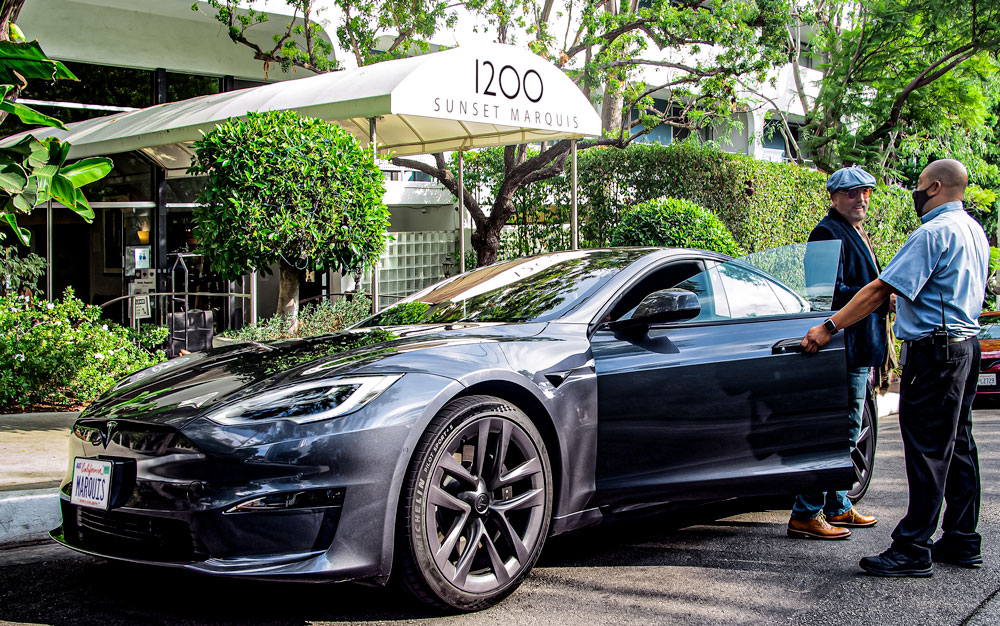
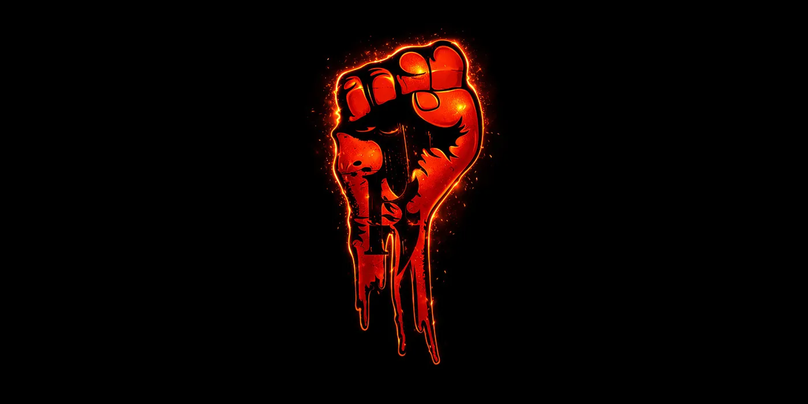
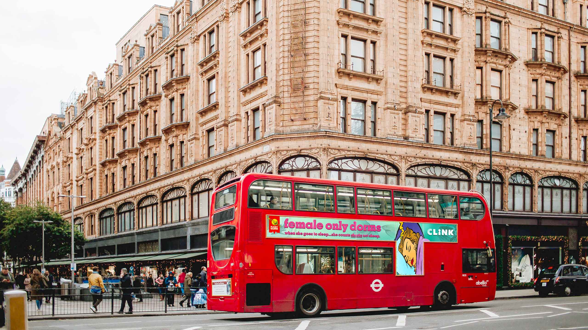
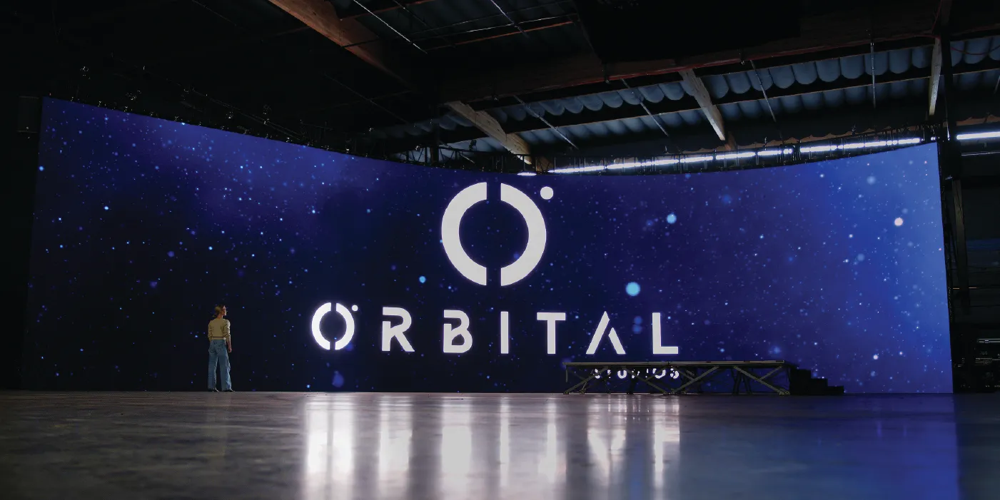
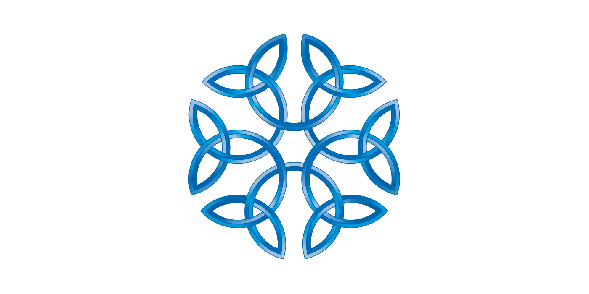

—The Work
I like hats, which
is useful,
because the best
projects rarely
need just one.
Zander Vera makes brands, identities, campaigns, objects, and digital things feel more inevitable than they probably were.
Creative director, brand builder, writer, musician. Founder of AGENCY689 and ZNDRCRTV.

Traveler Guitar
Master brand, product marks, digital, packaging, and the small details people actually hold.

Hotel Figueroa
A Los Angeles icon rebuilt as an identity system with memory, atmosphere, and bite.

Sunset Marquis
A legendary hotel brand moved forward without sanding off the thing people came for.

The Overlook
Naming and identity for a hilltop Santa Clarita apartment community.

Killer Networks
Networking hardware turned into a gaming brand with a simple enemy: lag.

Clink Hostels
A hostel web experience rebuilt around social travel, clearer journeys, and easier booking.

Orbital
A virtual production brand built around movement, precision, and scale.

GrillHut
A food brand with stronger signage, menus, and a more ownable visual attitude.

Oxford Collection
A clearer house of brands for a hospitality group ready to scale.